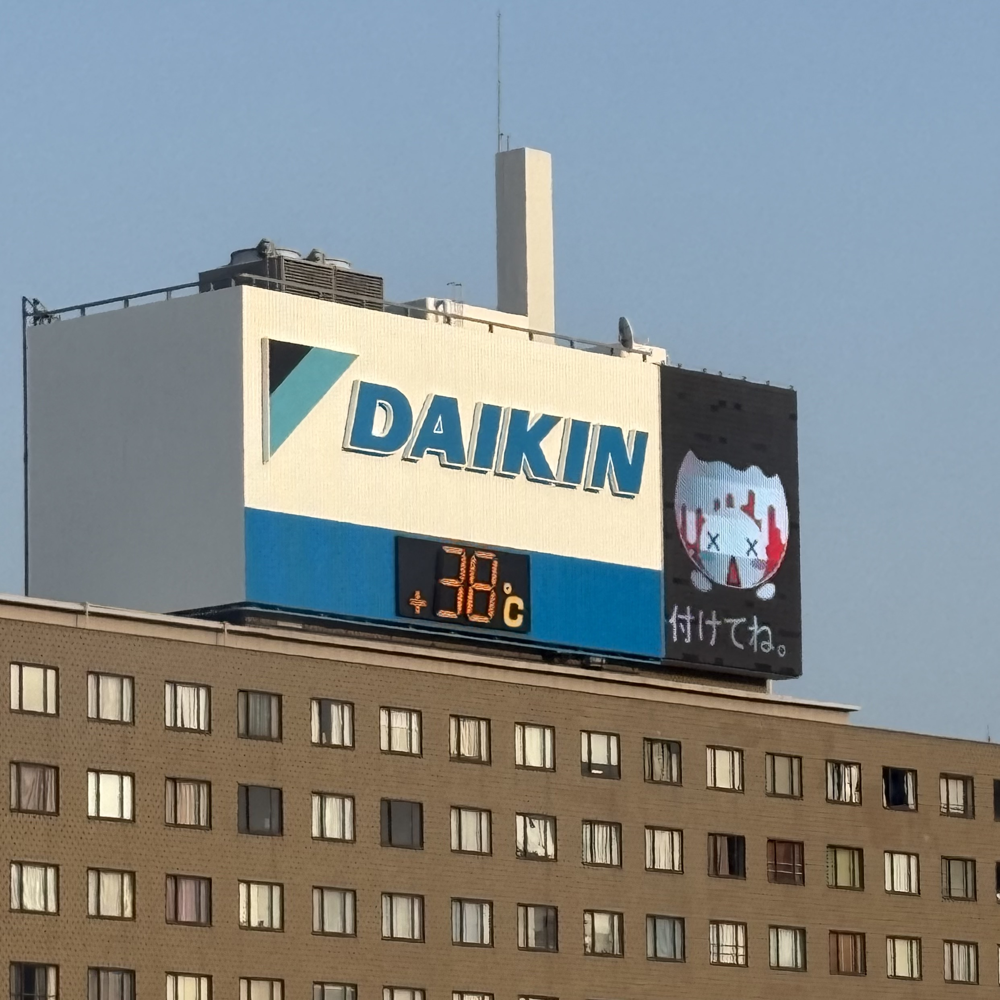
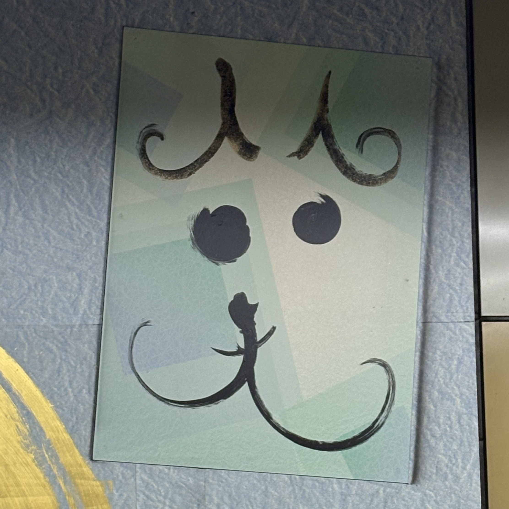

妹が知覧の特攻平和会館へ行くと言い出した
戦争に関心を持っているのは事実なので止めないが、その場所に興味がある、とか
そこに行くことでその時代を生きた人の気持ちに触れたい、と言い出したのであまりにも平和すぎないか、と思ってしまった
今の日本を生きていて平和だと思っているの？
今は本当に戦後、かな、と
わたしはその時代を生きてなくてよかった、とか言い出すんじゃないの、とまで言った
妹もどんどん高揚してきたけど、徐々にわたしの言っていることもわかってくれたようだった
日本は戦争の被害国なだけかな？
この頃それを思う
SNSで、”どうして日本の平和教育では被害のことばかりを教えるのだろう”という趣旨の投稿を見た
そのことばがなぜかずっと引っかかっている
わたしは高校の時に世界史を選択した
とても熱心に学んだと思う
現代に近づくと駆け足になることが多かったのが残念だったが、
世界史では当然、日本だけを主語にして歴史を見るわけではない
だからわたしは太平洋戦争を"日本が被害を受けた戦争"として学んだ、という感覚があまりない
沖縄に住む人が戦争は終わっていない、米軍基地がすぐ近くにあると言っているのを聞いて、
わたしはある一面だけを見ているわけにはいかないと思うわけだ
平和ってなんでしょうね
それらに加えて、そんなふうに関心があるならデモに行くのもいいとおもうよ、と言ったのもよくなかったようだ
急にそんなことは考えられない、といっていた
そして妹がわたしに、戦争に対して何ができるの、お前は何かしているのか、と言った
わたしは、ワンクリックのオンライン署名、できる範囲の企業ボイコット、
あとは「戦争反対」と言い続けることだよ、と言った
そこら辺からお互いの気持ちが見えてきた気がする
妹を否定したかったわけではない
わたしも深く学んでいるわけではないし、間違っていることを言っていることも多いと思う
口でいうだけではなく、自ら足を運ぼうとしていることはものすごいことだと思う
それにはものすごくパワーがいることだから
さいごに、わたしは行けないからわたしの分まで見てきてね、と伝えた
「大豆田とわ子と三人の元夫」の7話で過去と現在の話をしていて、 ずっと理解ができなかったんですけど、今は少しずつわかってきた気がするんです 時間は過ぎ去っていくものではない 過去とか未来とか現在は場所っていうか、別べつのところにあるって話 むかし哲学の授業でやったような ハイデガーだったかな その話ともつながりますか？ "過去に笑っていたあの人を知っていたら、その人は今も笑っていて、いつでも気持ちを伝えられる" これは物理的な話ではないですよね？ でもなんだか救われる気持ちがあるんです わたしのやりたいことのひとつっていうか たいせつにしなければならないことだと思うんです
のりまきゴマちゃん
この頃は夜中に起きてあたまが忙しくて眠れなくなってしまう
台湾の行ったことも見たこともない海とかを想像する
岩場の海で風が強いから帽子が飛ばされないように、とか
どんな服を着るのがいいか、とか
そしたら眠りに落ちていて、気づいたら朝
あと何回瞬きをしたらそこに行けるのか
しごとでミスしたのにお昼にポテコ買った
反省しないでお菓子食べてる、って思われたかな
辺境をひさしぶりに聴いた
やっぱりいいと思った
何でこんなにもこだわるのかわからない
わたしはずっと辺境を探しているからかもしれない
わたしがこの曲をつくって辺境だと思ったのはわたし家のそばの海で、MVを撮ろうと思ったのは山形へ向かうまでの笹川流れの海で、漫画を描こうと思ったのは青森の種差海岸の海で
今、完結に向かうために浮かんでいるのはもっと遠くてわたしがみたことがない海な気がしている
"そんなところへ"と歌うところを
"そんな異国(ところ)へ"と
ふりがなを振ってまで歌詞を変えていて
当時どうしてもここにこだわったのが今ではなんとなくわかる
たぶん"ここ"ではない国なんだろうな、とおもう
この漫画をいつか完結させなくてはならないと思う
何度も描き換えるんだと思う
誰かのためにではなくてたぶんわたしのために
たぶんいろんな人を巻き込んでまでも
▶ 🎵 ▶
わたしにはかみさまはいないけど

ドラマ「すいか」のいいなとおもうところは、はじめて会ったひとでも互いを受け入れ、こころをひらくところが描かれているところ
そういうのをフィクションだから、といわないでほしい
きっとこういうこと、あるとおもう あってほしい
わたしはこういうものをうつくしいとおもう
”きっとあなたにも何かありますよ
もしかしたらあなたが持っているものはまだこの世にないものかもしれないし”
って、とても救われることばだとおもう
相手をあまり知らないからかけられることばっていうのはあるのかもしれない
それにしてもあんしんがあって、いいなとおもう
わたしの原動力って悔しさとか怒りかもしれないって思って眠りについた夜
夜の駅前、無言でチキンとポテトの入った紙袋を無言で突き出され、
「しおりちゃんは怒ったりしてへんほうがかわいいで」って言われる夢をみた
ほんならやってみてよんッ
なっちゃんとごはんへ行く約束を先にしていた 政治の話とかしたことないし、
デモあるからそれに行かないか、と言えなかった 待ち合わせ、店に入って
そしたらなっちゃんが今日デモあるよね、って
しおりちゃん前に行ってたよね、って
ツイッターみていつも考えてる、腹立ててるって話をしてくれて
それってとても大きなことなんじゃないかなって思った
デモ行こうって言えなかった、とお互いに思ってたみたいだ
政治の話なんかじゃないよ 生活の話だよね
せいかつ、のために
今がとめられるさいごなのかもしれない、といつもおもう
わたしは生きたいとは思わないけど
夢を語るから
だから多分、心の底では生きたいんだと思う
わたしにできることってなに
パエリアを食べながら国会前のデモの配信を流していた
帰ったら見ようって思った
官邸にメールを送ったり、オンラインを署名したり、デモへ行ったとかの発言しなくても
それがないことにはならないとおもうよ
わたしはこういう一歩一歩なんじゃないかとおもう
わたしたちがこういう話をしたこともそう そう信じているから
わたしはふつうとか、そういう概念をいつもぶっ壊したいと思っている
でもわたしがほんとうにぶっ壊したいのはふつう、ということばでだれかを排除してしまう考え方なんだということにさいきん気づいた
存在するのにいないものとされること
自分のものさしで測ってしまうこと
ホームページをつくりました
いつもあたまのなかが散らかっている
でもふとしたときにそれらがつながるときがある
何かをわかろうとするとき、変わりたいと思ったとき、わからないけれど
なんだか紙や布を針と糸で縫っていく作業に似ている
わたしがやってきたこと、これからやることはぜんぶ巨大パッチワーク作品の一部なんだと考えたらきもちが落ちついた
わたしは日々、散らばったわたしのためのカケラをあつめているんだと思います
ここはそれらを見せられるところになればいいと思っています